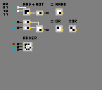

// notes
how do game makers soften divisive outcomes and ensure continued engagement when players of variable likelihood of success compete?
RNG (random number generation)
// democracy hotfix
% of vote = % of chance
* with an agreed upon skew and required min
view counts are an inflated metric especially in the age of quick content *tiktok
watch time / video time > view count
spatial coding can be approached from the binary level up. to compete more wholly with the incumbant text based model
